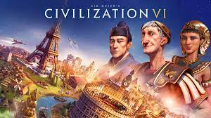

Strategijos Žaidimai
Strategijos žaidimai reikalauja iš žaidėjų strateginio mąstymo, planavimo ir išteklių valdymo. Šiuose žaidimuose žaidėjai dažnai turi kurti ir valdyti savo civilizacijas, kariuomenes ar verslus, kovoti su priešais ir siekti įvairių tikslų. Populiariausi strategijos žaidimai:
- Civilization - žaidimų serija, kurioje žaidėjai kuria ir valdo civilizacijas nuo akmens amžiaus iki ateities, siekdami užkariauti pasaulį arba pasiekti kitus tikslus.
- StarCraft - realaus laiko strategijos žaidimas, kuriame žaidėjai valdo skirtingas rases ir kovoja dėl galios visatoje.
- Age of Empires - istorinis strategijos žaidimas, kuriame žaidėjai kuria imperijas, kovoja su priešais ir vysto savo civilizacijas per skirtingus istorijos laikotarpius.
- Total War - strategijos žaidimų serija, kuri sujungia realaus laiko mūšius ir ėjimų pagrindu vykdomą strateginį planavimą.
Strategijos žaidimai yra puikus būdas išbandyti savo loginį mąstymą ir problemų sprendimo įgūdžius. Jie gali būti labai įvairūs - nuo realaus laiko strategijų iki ėjimų pagrindu vykdomų žaidimų, ir dažnai turi ilgą žaidimo laiką.